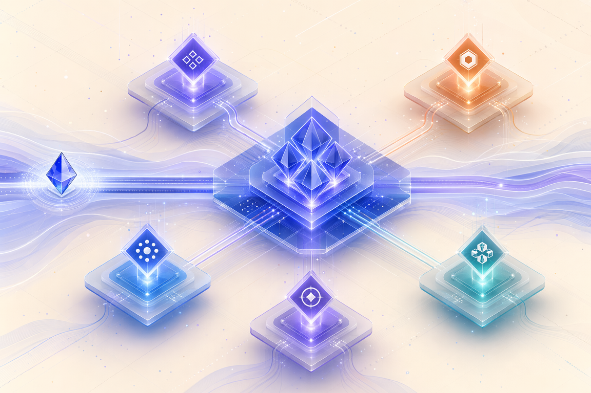

End-to-end Azure architecture across infrastructure, data, AI, modernization, and security from enterprise to SMB customers.
Hung Yen, Vietnam Azure Cloud Solution Architect
Azure, data, and agentic AI — adoption-ready from enterprise to SMB customers.
Azure Cloud Solution Architect, working across Azure infrastructure, Microsoft Fabric, Azure OpenAI, Microsoft Foundry agents, app modernization, and security so customers from enterprise to SMB land architectures they can adopt and operate with confidence.
11+ years across software engineering, enterprise support, Azure migration consulting, presales solution design, full-stack cloud architecture, and agentic delivery with AI coding agents and Microsoft Fabric.
- Azure landing zones
- Microsoft Fabric
- Azure OpenAI
- Foundry agents
- Multi-agent & MCP
- AI coding agents
- App modernization
- Entra & Defender
- Cloud migration
- Presales & MCEM
Infrastructure, Microsoft Fabric, Azure OpenAI, app modernization, and security shaped into one coherent architecture.
Azure Solutions Architect Expert plus Fabric Analytics, Fabric Data, and GitHub Copilot credentials.
Foundry Agent Service, AI Foundry Agents SDK, MCP, and AI coding agents turned into reviewable customer prototypes.
Skills atlas
Cloud architecture skills shaped across the full Azure stack.
Capability areas I work across as an Azure Cloud Solution Architect serving customers from enterprise to SMB — landing zones and Microsoft Fabric to Azure OpenAI, Foundry agents, AI coding agents, app modernization, and security.
Verified credentials
Microsoft and GitHub credentials, verifiable on Microsoft Learn.
Active certifications backing the Azure Cloud Solution Architect scope across Azure infrastructure, Microsoft Fabric, generative AI, and AI coding agents. Each badge links to the official credential record on Microsoft Learn so anyone can validate it directly.
Experience
A journey through support, cloud, data, and agentic-AI architecture.
From enterprise troubleshooting and .NET development to Azure migration guidance, presales solution design, Microsoft Fabric, and Foundry-agent delivery.
Writing
Field notes on cloud, AI, and agent systems.
Long-form architectural notes from production work as a Cloud Solution Architect — frameworks distilled, control surfaces named, and the philosophy behind the multi-agent plugin I ship on GitHub.
AI Engineering · Trust Controls
Engineering AI solutions that earn trust.
Six pillars of trustworthy AI in production — governance, security, observability, guardrails, red teaming, and continuous evaluation — mapped from NIST AI RMF, OWASP LLM Top 10, and Microsoft Responsible AI onto the Azure AI stack.

Field notes · Agent systems
Why agent systems need architecture.
Six axioms behind ytthuan/agents-system-setup — a
multi-runtime plugin that turns one-off agent prompts into a
reviewable system with topology, MCP gates, Canonical IR,
parallel waves, and evidence-based work.
Let's build what's next
Azure, Fabric, and agentic-AI architecture from enterprise to SMB customers.
Open to high-leverage technical collaboration where architecture must become usable guidance, prototypes, and dependable execution.